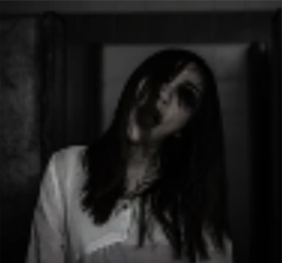
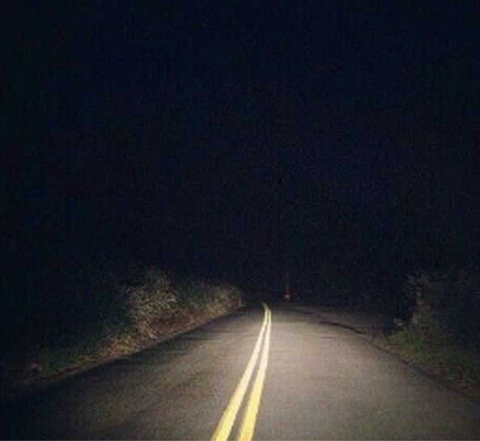
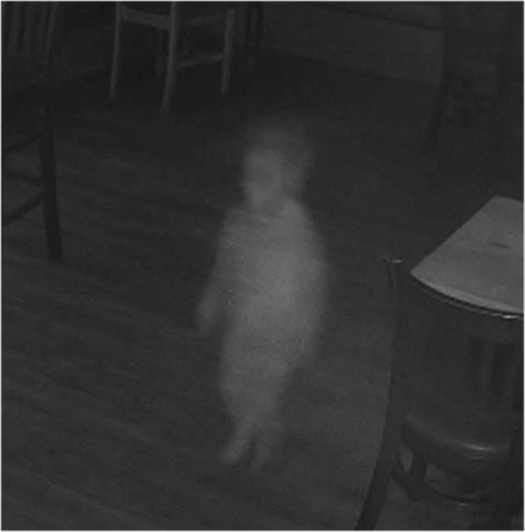
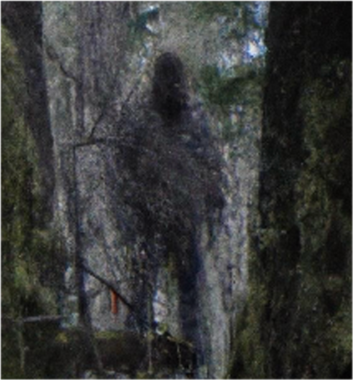
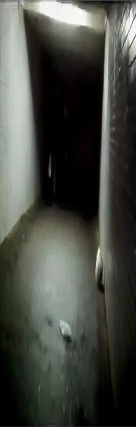

Now Trending

Real Ghost Girl Caught On Tape

Is Ashbrooke's Main Road HAUNTED?

Submit your ghost stories

Ashbrooke Cryptid Sightings
WHO-IS-WATCHING-ME.COM
FBI?
POLICE?
STALKER?

WHO-IS-WATCHING-ME.COM
Want More?
Click here!